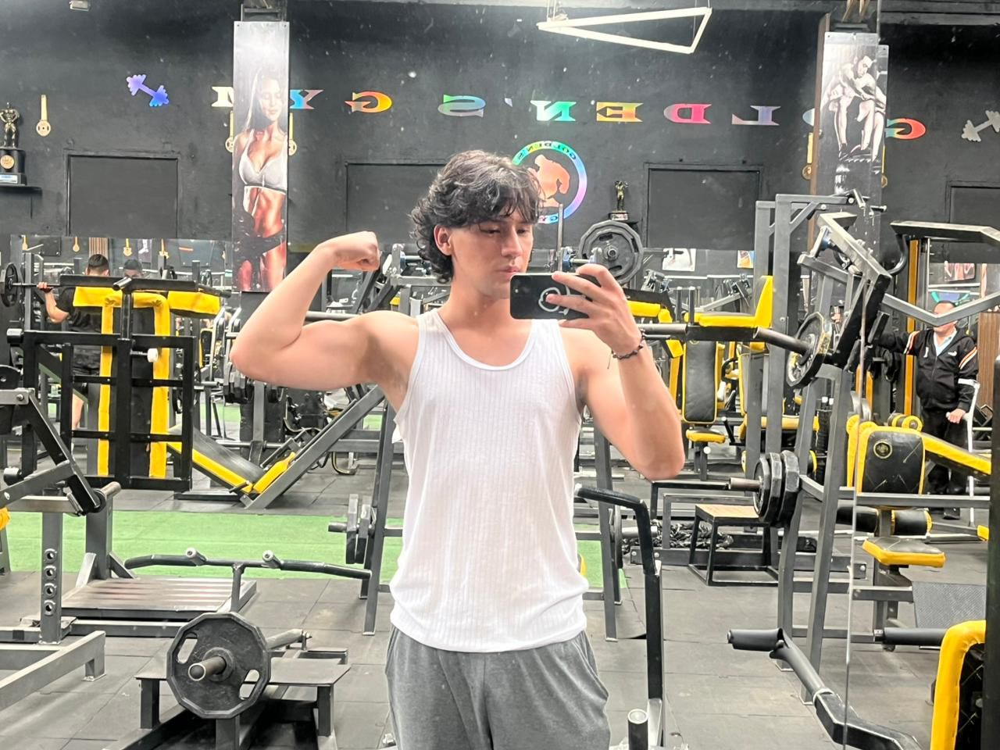
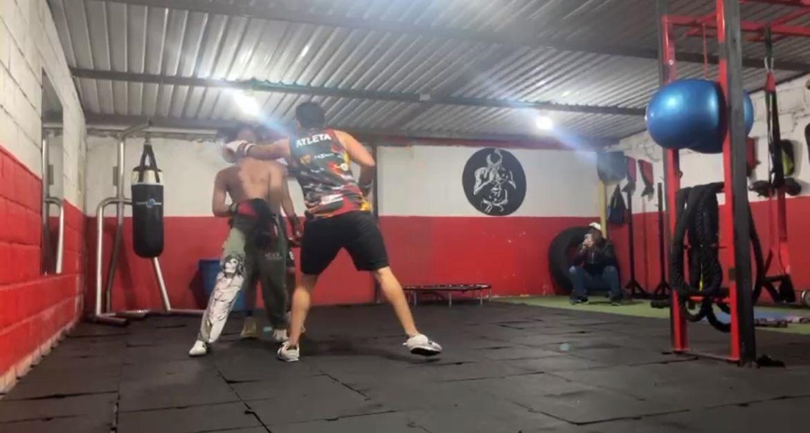
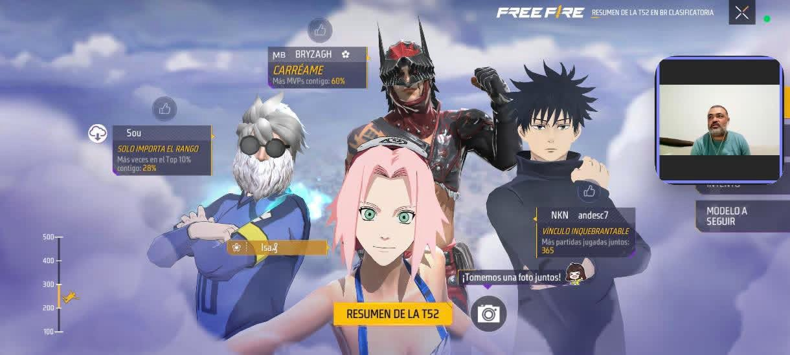
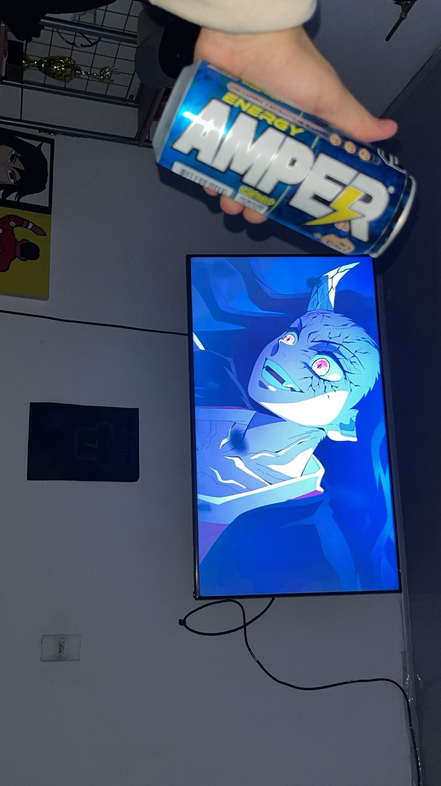

Gimnasio y Entrenamiento de Fuerza
Práctica constante de musculación con rutina Push/Pull/Legs para acondicionamiento físico e hipertrofia.

Boxeo y Acondicionamiento
Entrenamiento de resistencia, técnica y acondicionamiento mediante la práctica de boxeo.

Free Fire y Videojuegos
Jugar free fire con mis amigos en las noches.

Ver Anime
Disfruto ver series de anime en mis tiempos libres como entretenimiento y descanso.
